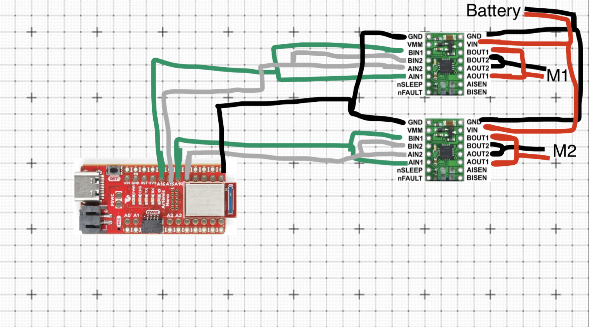
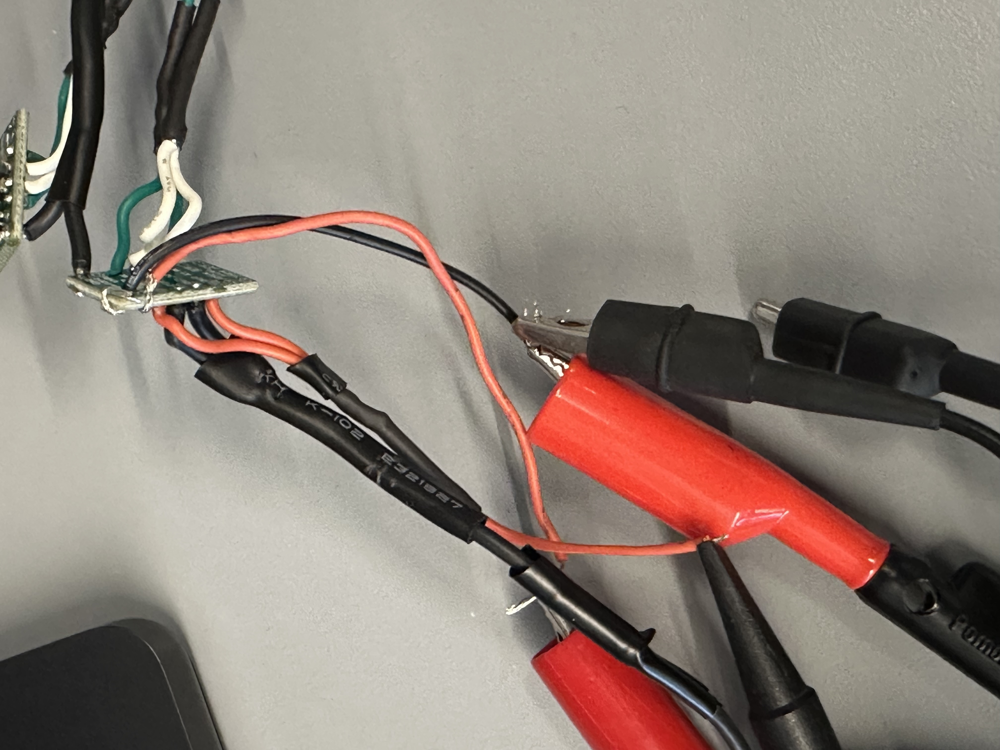
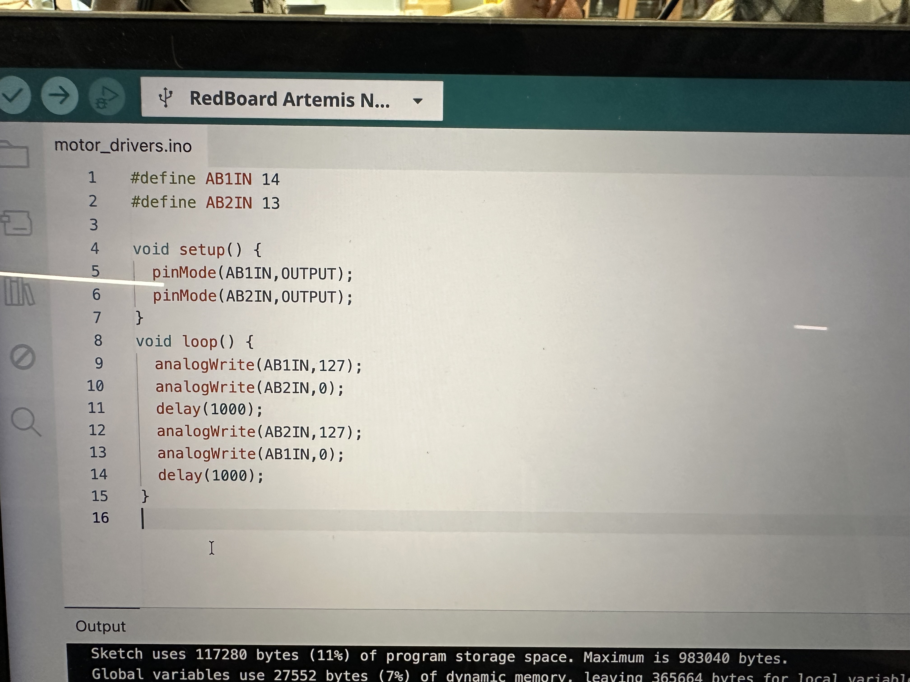
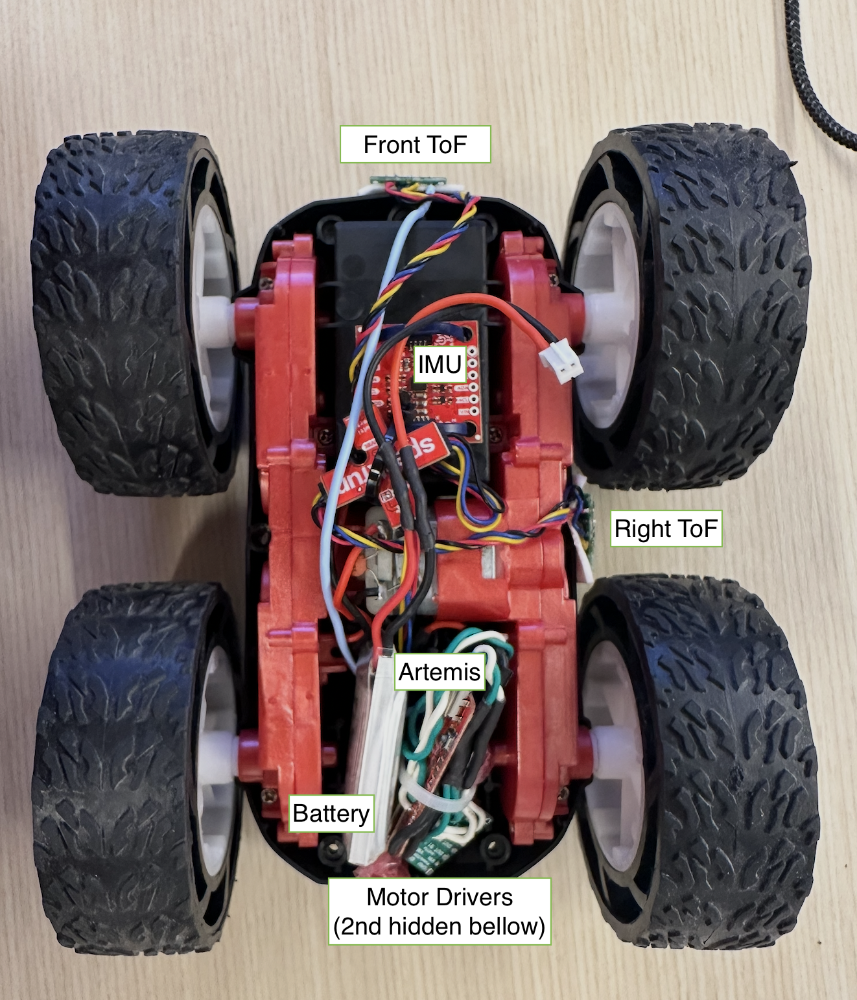
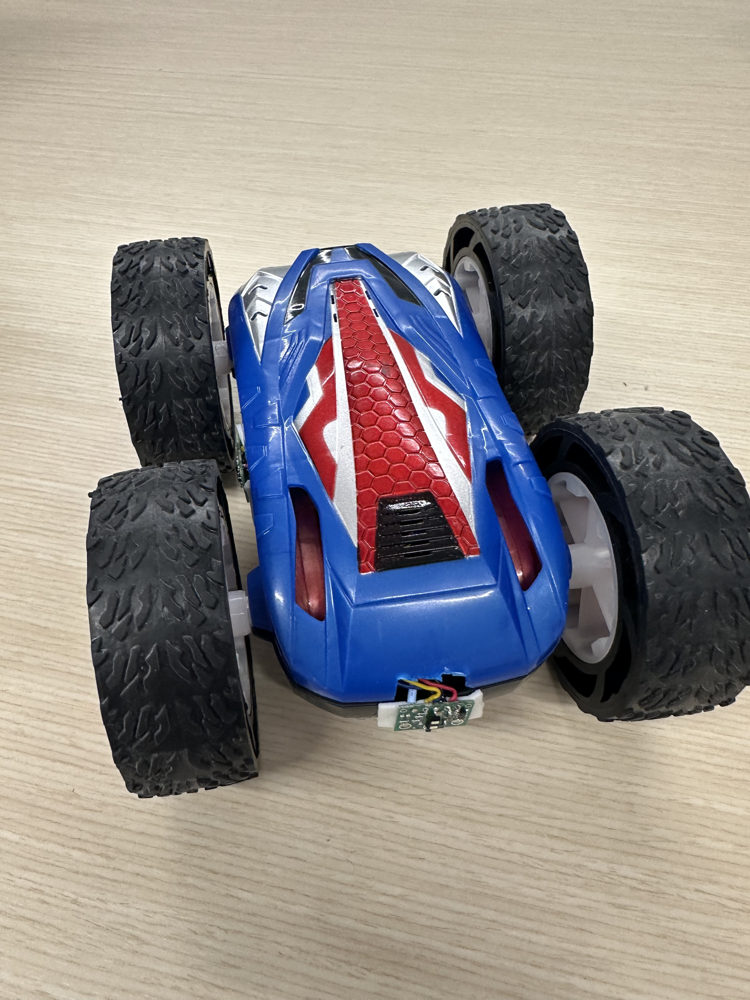
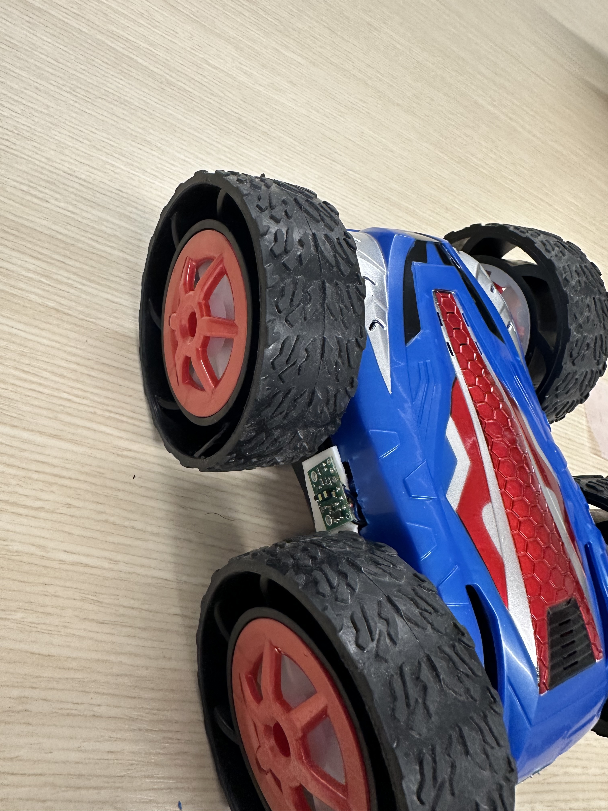
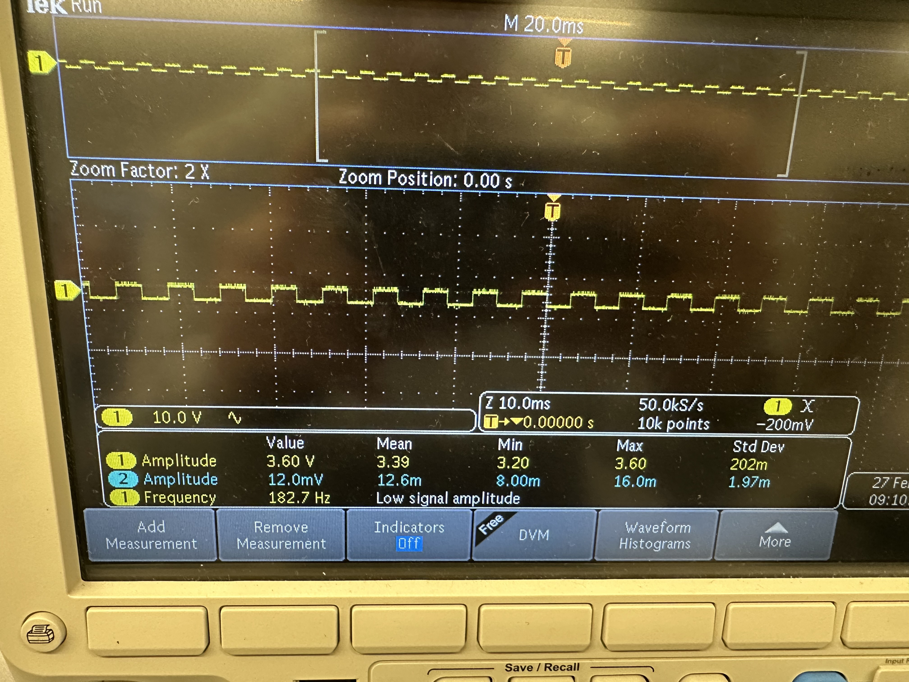

- Integrate Motor Drivers to control motors
- Enable Open Loop Control of Car
Objectives
Lab 4 Tasks
- PWM signals and setup
- Motor Functionality
- Car Final Body
- PWM lower limit
- Callibration
- Open Loop Control
- analogWrite frequency (5000 level)
- Lowest PWM value speed (5000 level)
Prelab
The following is a sketch of all of the connections that are going to be made (M1 and M2 correspond to the two motors and Battery is our 850mAh one):

Figure 1: Wiring Diagram
I decided that I will connect the two driver motors to the Artemis using the pins A13, A14, A15, A16
as they are all capable of producing PDW signals and they are not going to be used by anything else. Though the pins are all next to each other, I like the ease of mind having them lined up provides. Also it would make it easier to couple the different inputs of the motor drivers, in addition to beign a more easily managable setup in terms of placement in the car.
Battery Discussion:
The motor drivers, and therefore the motors as well, are powered by the 3.7V 850mAh battery. The Artemis, however, is powered by the 3.7V 650mAh battery. This is to ensure smooth operation of both parts of the robot in case the motors tried to draw too much current which would have otherwise possibly make the Artemis turn off. Having two different batteries, separating the two compartments of the robot, ensures this won't happen. Additionally, as we know, the motors consume a lot of power. Having a different battery allows us to keep using the Artemis, for whatever purpose, in the scneario where the battery that powers the motors dies. And it makes sure we can run the motors for as long as possible as the Artemis doesn't consume power from the same battery.
PWM signals and setup
After having soldered everything together, I connected my motors to the Oscilloscope and powered them via the lab's power supply as is shown below:

Image 1: Motor Driver - Oscilloscope - Power Supply
Power Supply Settings:
I powered the motor with 3.7 Volts since that is the same Voltage of our 850mAh battery, which is the one that'll be powering them afterwards.The code that was used to test the motor was the following:

Image 2: Motor Driver Code
This code defines the PINS as output on the Artemis and we begin by having #1 send a PWD signal with 50% duty cycle (127 = 255/2) while #2 is "off", and then, after a small delay, #2 sends the same type of PWM while #1 is "off".As a result, when we connect the drivers to the motors and run the same code, the wheels of the car go in one direction, then they stop briefly, and then they go in the other direction. This will be shown in a video.
The following are two videos of the oscilloscope with different trigger settings so show both PWMs clearly:
Videos 1, 2: Oscilloscope of motor driver
Motor Functionality
After making sure the drivers worked, I soldered everything in place and tested the wheels spinning. The code was visible in Image 2. For the other set of wheels, I just changed the AB1IN and AB2IN definitions to the corresponding Artemis Pins (16 and 15 respectively).
The following videos are showing the left and the right wheels moving while being powered by the 850mAh battery:
Videos 3, 4: Wheels moving alone
To make both wheels move at the same time I just added the two files together and tuned it like
#define FORWARD_LEFT 16
#define BACKWARD_LEFT 15
#define BACKWARD_RIGHT 14
#define FORWARD_RIGHT 13
void setup() {
pinMode(FORWARD_LEFT,OUTPUT);
pinMode(BACKWARD_LEFT,OUTPUT);
pinMode(BACKWARD_RIGHT,OUTPUT);
pinMode(FORWARD_RIGHT,OUTPUT);
}
void loop() {
analogWrite(FORWARD_LEFT,125);
analogWrite(BACKWARD_LEFT,0);
analogWrite(FORWARD_RIGHT,125);
analogWrite(BACKWARD_RIGHT,0);
delay(1000);
analogWrite(FORWARD_LEFT,0);
analogWrite(FORWARD_RIGHT,0);
analogWrite(BACKWARD_LEFT,125);
analogWrite(BACKWARD_RIGHT,125);
delay(1000);
}
Note that, in order to make the wheels go in the same direction the code should be that way so that one motor goes clockwise and the other counterclockwise, since they are flipped.
The following video shows both of the wheels do the same motion at the same time:
Videos 5: Wheels moving at the same time
Car Final Body
In the following images, we can see the final body of the car. First we have the components secured to the car, and then we have the car with the top attached:

Image 3: Top view of open car

Image 4: Front view of closed car

Image 5: Side view of closed car
PWM lower limit
When trying to test the PWM lower limit for my car, I set it at 50/255 and there was an issue of one pair of wheels getting stuck for a brief moment. That is visible in the following video (lower the playback speed to see it better):
I hypothesized that it may have something to do with the battery, so I put it to charge and then retried and continued with the tests.
That turned out to be true. While the battery was charging I made cases for the Artemis so that I could send commands from my computer in the following format where the first integer is the PWM for the left pair of wheels and the second is for the right:
ble.send_command(CMD.PWM_TEST, "200|200") After charging the battery to 100% I re-ran my tests and the results are the following:
The lowest PWM signal I could send that would make the robot move from rest was 33, while the lowest to rotate on-axis was 165. The tires of the car are still brand new and the table provided a lot of friction. I believe that on a different surface it would have been lower.
The code lines were:ble.send_command(CMD.MOVE, "33|33") and
ble.send_command(CMD.SPIN_IN_PLACE, "165|165")
where X|Y X is the left wheels PWM and Y is the right ones'.
For example, to move forward the code snippet would be:
analogWrite(FORWARD_LEFT,165);
analogWrite(BACKWARD_LEFT,0);
analogWrite(FORWARD_RIGHT,165);
analogWrite(BACKWARD_RIGHT,0);
Here are videos of these commands being sent to Zeus:
Callibration
In order to demonstrate that Zeus (the robot) can move in a straight line, I recorded a video of it moving along a 2m straight path of tape:
As we can see from the video, Zeus was able to follow the path along. I was extremely lucky and my motors did not need any callibration.
the code I used was: ble.send_command(CMD.MOVE_2M_F, "80|80")
Open Loop Control
To implement an open loop control, since I didn't need to callibrate my wheels, I modified the Artemis case I made (mentioned under PWM lower limit), to make it move in a predefined manner without any input from the sensors. ble.send_command(CMD.OPEN_LOOP, "60|115") 60 is straight_speed and 115 is turn_speed (code below):
analogWrite(FORWARD_LEFT,straight_speed); analogWrite(BACKWARD_LEFT,0); analogWrite(FORWARD_RIGHT,straight_speed); analogWrite(BACKWARD_RIGHT,0); delay(1000); analogWrite(FORWARD_LEFT,0); analogWrite(FORWARD_RIGHT,0); analogWrite(BACKWARD_LEFT,0); analogWrite(BACKWARD_RIGHT,0); turnRight(turn_speed); analogWrite(FORWARD_LEFT,straight_speed); analogWrite(BACKWARD_LEFT,0); analogWrite(FORWARD_RIGHT,straight_speed); analogWrite(BACKWARD_RIGHT,0); delay(1000); analogWrite(FORWARD_LEFT,0); analogWrite(FORWARD_RIGHT,0); analogWrite(BACKWARD_LEFT,0); analogWrite(BACKWARD_RIGHT,0); turnLeft(turn_speed) ; analogWrite(FORWARD_LEFT,straight_speed); analogWrite(BACKWARD_LEFT,0); analogWrite(FORWARD_RIGHT,straight_speed); analogWrite(BACKWARD_RIGHT,0); delay(1500); analogWrite(FORWARD_LEFT,0); analogWrite(FORWARD_RIGHT,0); analogWrite(BACKWARD_LEFT,0); analogWrite(BACKWARD_RIGHT,0);
analogWrite frequency
In order to find the analogWrite's frequency I connected the oscilloscope to the pin A3 of the Artemis and sent an analogueWrite signal.

Image 6: Oscilloscope photo with PWM frequency
The frequency measured was ~ 183 Hz (182.7Hz). Though it is low for PWM, it does work fine with our motors. The issue with low freq PWM's is that the switching speed might be too slow for the motor to smooth out the current. Based on that, we could say that if we could manually configuring the timers to generate a faster PWM signal, could allow us to have a smoother torque output and less instability.
Lowest PWM value while moving
After having found the minimum PWM values to start moving from rest, I made the car move with 55 in a straight line and 175 to rorate on axis and the smallest values while in motion are 30 for going straight and 163 for on-axis rotation afterwards, they can stop immediately. This can be seen in the following videos:
Discussion
Lab 4 successfully investigated the PWM our Artemis ouputs and secured all of the electronics on the robot's body and motors and they are now all functional.
Collaboration
I referred to Aidan McNay's website for structuring this lab report.